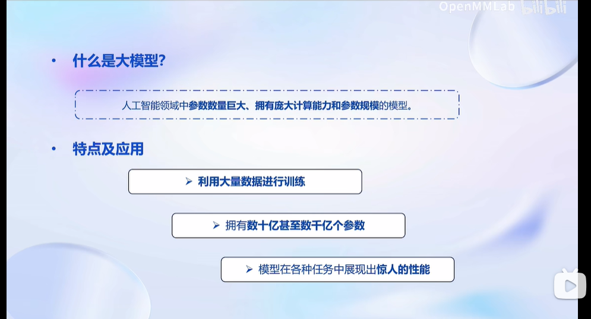
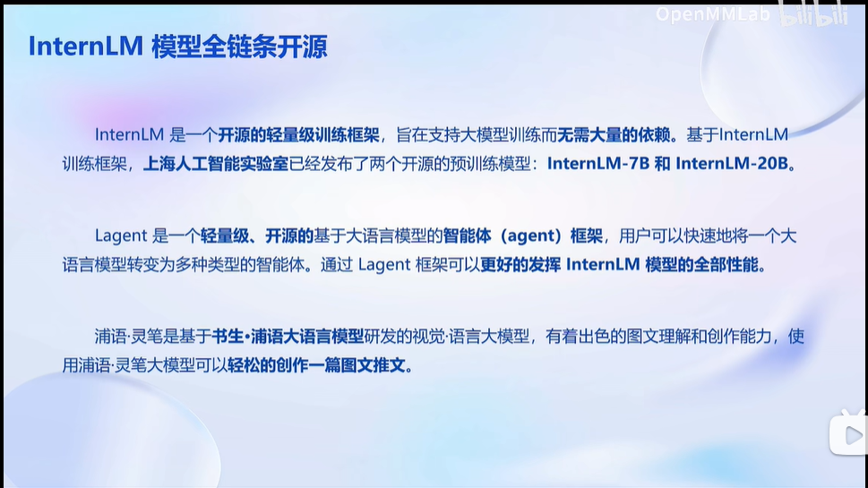
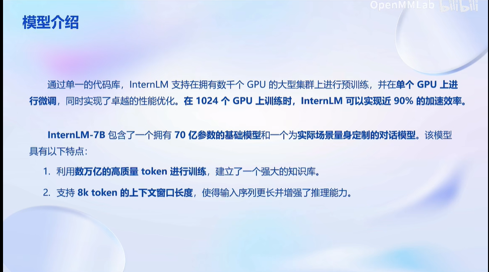
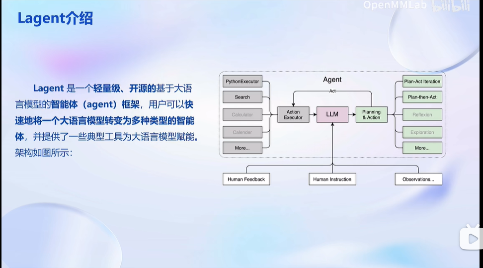
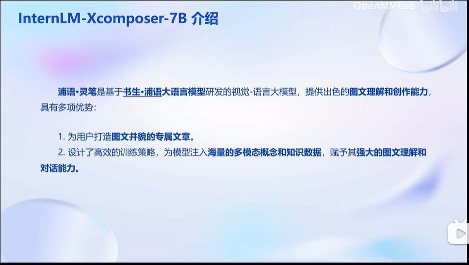
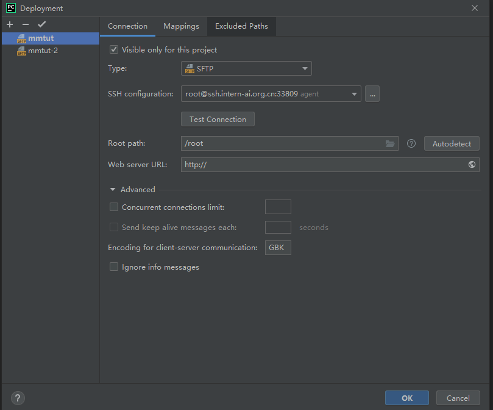
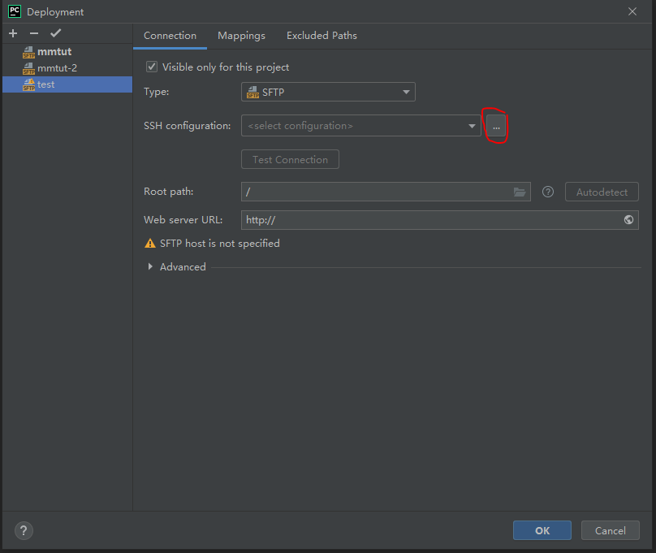
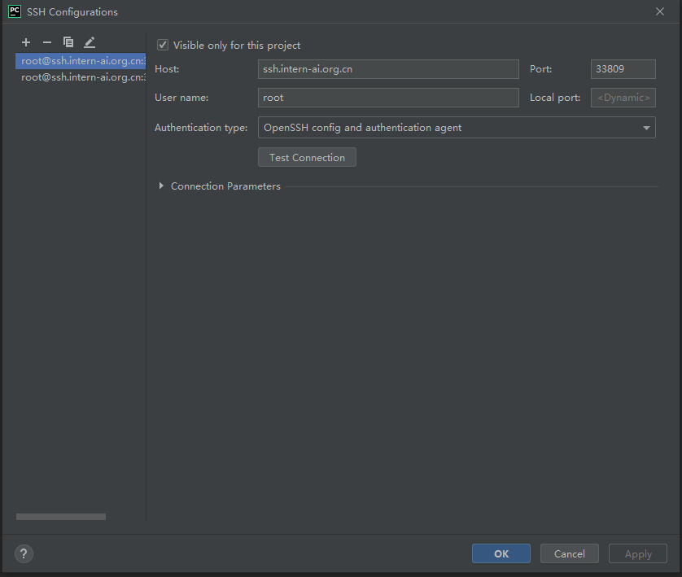

大模型实战营第二次课笔记
这是大模型实战营第二次课的笔记
动手实践部分，后面有时间我会补充相关代码和我加的注释
大模型及InternLM模型介绍


InternLM-Chat-7B 智能对话 Demo
- 模型介绍

- 动手实践
见作业此处
Lagent 智能体工具调用 Demo
- 框架介绍

- 动手实践
见作业此处
浦语 · 灵笔图文创作理解 Demo
- 模型介绍

- 动手实践
见作业此处
通用环境配置
当作一个字典来查吧
- pip 换源
1 | python -m pip install --upgrade pip # 升级pip |
- conda 换源
需要修改.condarc文件内容
不同系统下的 .condarc 目录如下：
Linux:${HOME}/.condarcmacOS:${HOME}/.condarcWindows:C:\Users\<YourUserName>\.condarc
Windows 用户无法直接创建名为 .condarc 的文件，可先执行 conda config --set show_channel_urls yes 生成该文件之后再修改
之后执行
1 | cat <<'EOF' > ~/.condarc |
- SSH连接远程服务器
我之前做项目需要用，所以已经配置好了，直接把公钥复制，再在PyCharm（似乎需要Ultimate版）中进行一番配置，就可以用PyCharm连接开发机了，具体步骤如下：
1）点击 Tools -> Deployment -> Configuration，进入如下界面；

2）点击 '+' -> SFTP 输入自定义server名称后，进入如下界面；

3）点击上图红圈处，进入如下界面。在配置完成后，点击Autodetect可自动识别根目录；

4）输入Host, Username，选择验证方式，有3种方式，分别是密码，密钥对和SSH配置授权Agent，连接本例中的开发机应选择第3种方式；
5）点击Test Connection 测试连接。
- 模型下载
- HuggingFace Hub
安装
1 | pip install -U huggingface_hub |
下载方法1（命令行）：
1 | import os |
下载方法2（Python脚本）：
1 | from huggingface_hub import hf_hub_download # Load model directly |
- ModelScope
安装
1 | pip install modelscope==1.9.5 |
下载方法
1 | from modelscope import snapshot_download, AutoModel, AutoTokenizer |
- OpenXLab
安装
1 | pip install -U openxlab |
下载方法
1 | from openxlab.model import download |